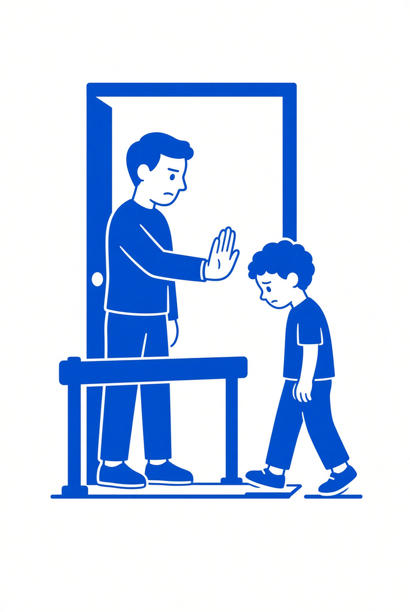
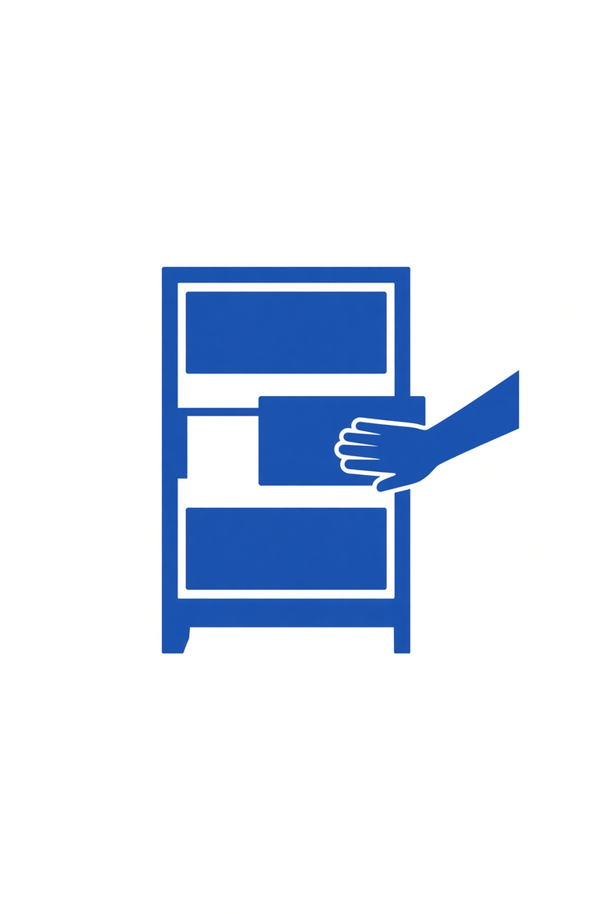
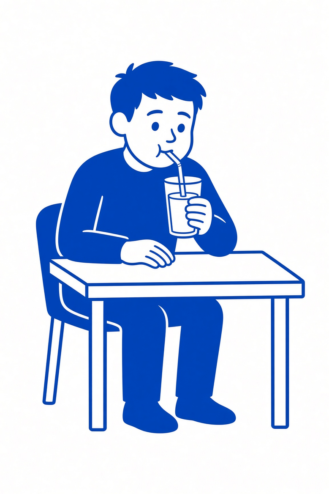
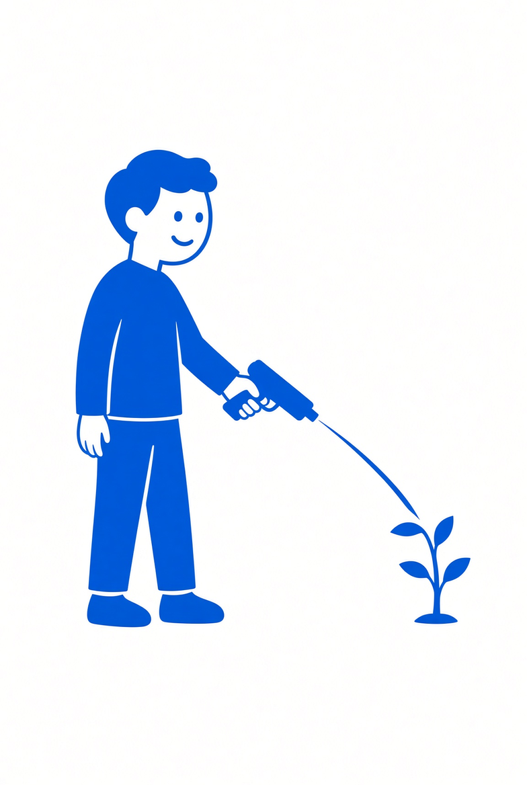
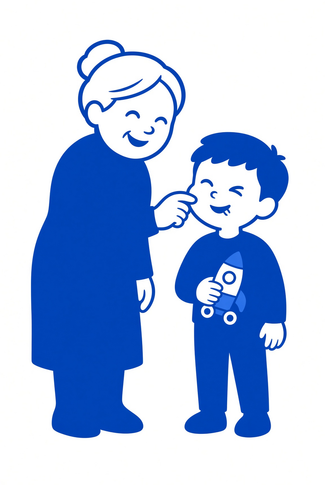
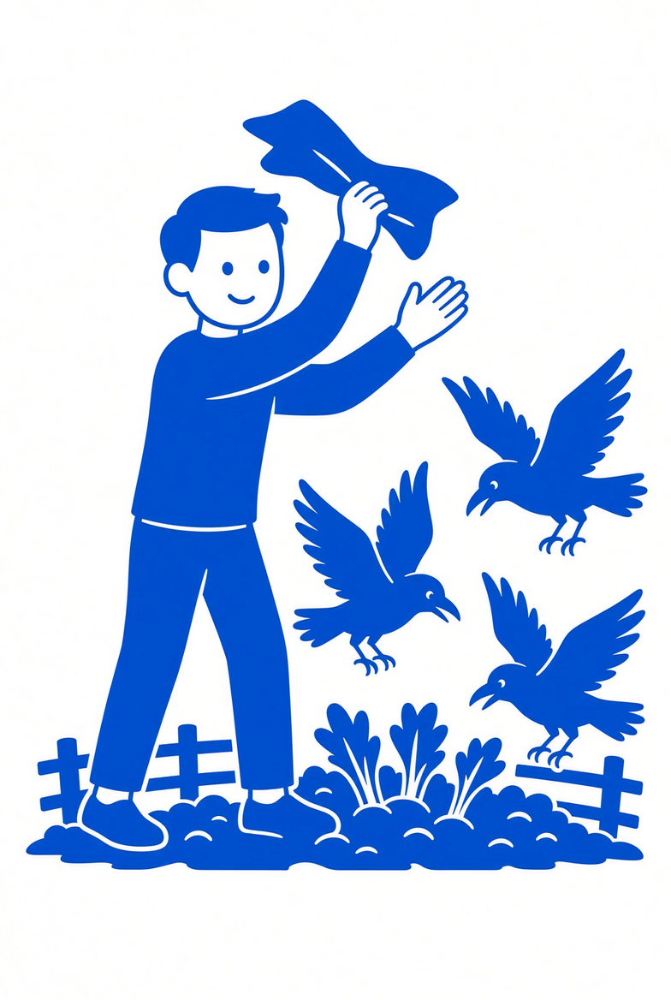
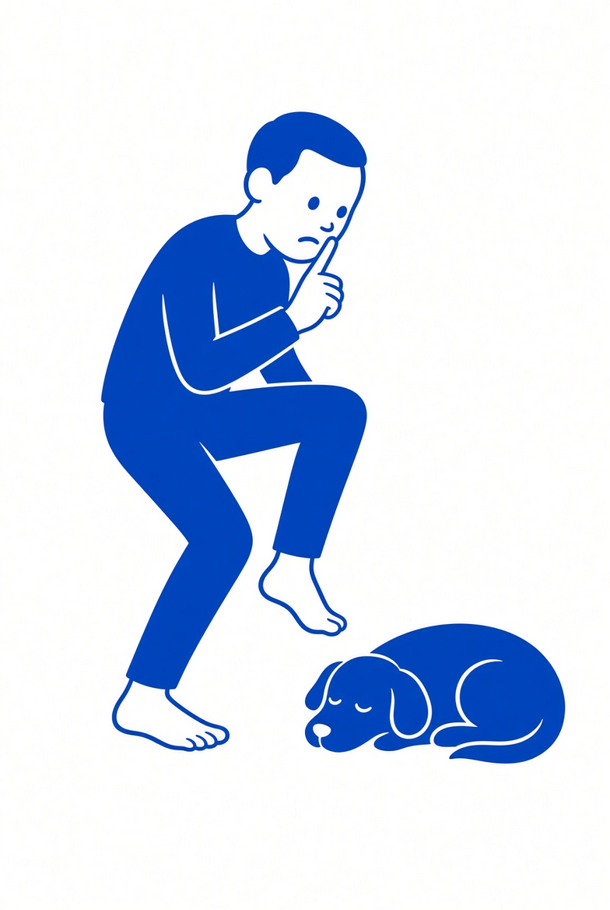

onderzoeken
to investigate
onregelmatigrang 926Thought & knowledgegetekend
onderzochtheeft onderzocht
- Scene
- one adult stands at a plain table bent forward with one eye to the eyepiece of a bold simple microscope that stands on the table, one hand on the microscope's focus knob; a small open notebook and a pencil lie on the table beside it. No magnifying glass, no bicycle, no second person.
- Must read
- a person with an eye to a microscope on a table, a notebook beside it.
- Avoid
- a hand-held magnifying glass (zoeken); a person kneeling on the floor (zoeken); a person leaning at a hanging picture (bekijken); a hammer and planks (maken); a pointer on a wall chart (wijzen).
- Alt text
- Iemand buigt zich aan een tafel over een microscoop, met een schrift ernaast.
- Example
- De politie gaat de zaak onderzoeken.
The police are going to investigate the case.
onderzoeken.png · rang 926 · B2 onregelmatig · lexicon woorden.tsv

stijgen
to rise
onregelmatigrang 2531Movement & positiongetekend
steegis gestegen
- Scene
- a hot-air balloon has just left the ground over a flat field: the basket hangs a metre above the grass and the rope from it trails slack; one adult stands on the field with the head tipped back, watching it go up.
- Must read
- a balloon basket clear of the grass with a watcher looking up.
- Avoid
- an aeroplane above the clouds (vliegen); a person on a staircase (stappen); a balloon basket resting on the grass (landen); a kite on a string (vliegeren); a person on a ladder (klimmen).
- Alt text
- Een luchtballon hangt net boven een weiland; iemand op het gras kijkt er met het hoofd achterover naar.
- Example
- De prijzen stijgen elk jaar.
Prices rise every year.
stijgen.png · rang 2531 · B2 onregelmatig · lexicon woorden.tsv

grijpen
to seize
onregelmatigrang 2750Abstract & generalgetekend
greepheeft gegrepen
- Scene
- one adult slips on a stair and seizes the handrail with one hand, the fingers clamped round it, the body tilted back and one foot sliding off the step; the other arm is flung out.
- Must read
- a hand clamped hard round a handrail as the feet slip.
- Avoid
- a hand closing around a mug resting on a shelf (pakken); a ball caught in two cupped hands (vangen); a person lying at the foot of the stairs (vallen); a hand resting loosely on the rail as a person walks up (stappen).
- Alt text
- Iemand glijdt uit op een trap en klemt een hand om de leuning.
- Example
- De agent kan de dief nog net grijpen.
The officer can just manage to seize the thief.
grijpen.png · rang 2750 · B2 onregelmatig · lexicon woorden.tsv

verbieden
to prohibit
onregelmatigrang 2983Abstract & generalgetekend
verboodheeft verboden
- Scene
- One adult stands at a barrier in front of a doorway with one open palm raised flat and held forward towards a child who steps in with one foot already over the threshold; the child has stopped, the head down, the chin on the chest.
- Must read
- a raised flat palm halting a child at a doorway.
- Avoid
- a hand laid flat on the barrier with a round sign mounted above it (mogen); an arm barred across the doorway with an adult held inside it (dwingen); an open empty palm held out low (vragen); a large red cross drawn on the frame.
- Alt text
- Een volwassene houdt een vlakke hand op naar een kind dat bij de deur is blijven staan.
- Example
- De school wil telefoons in de les verbieden.
The school wants to ban phones in lessons.
verbieden.png · rang 2983 · B2 onregelmatig · lexicon woorden.tsv

drijven
to float
onregelmatigrang 3191Abstract & generalgetekend
dreefheeft/is gedreven
- Scene
- one adult lies on their back on calm water, arms spread wide and legs straight, face up and eyes closed, the body level and still with no splash. The body lies horizontal along the water surface, seen from the side, with the head at one end and the feet at the other, the whole back flat on the water line and the legs level, not vertical.
- Must read
- a person lying still and level on the water's surface.
- Avoid
- a swimmer with one arm lifted in a stroke (zwemmen); a boat going under bow first (zinken); a person lying on a beach towel (liggen); a diver head first (duiken).
- Alt text
- Iemand rust met gespreide armen op de rug op het water.
- Example
- Het houten bootje drijft op het water.
The wooden boat floats on the water.
drijven.png · rang 3191 · B2 onregelmatig · lexicon woorden.tsv

dringen
to push in (a queue)
onregelmatigrang 3463Movement & positiongetekend
drongheeft gedrongen
- Scene
- one adult pushes one shoulder between the backs of two adults waiting in a line, the shoulder already wedged in the gap; the front person turns with a frown. Three figures only, no counter and no shop.
- Must read
- a shoulder wedged between two waiting backs.
- Avoid
- two hands flat on a big crate on the floor (duwen); a note pushed along a counter (betalen); a hand sliding a drawer open from the side (schuiven); a thin queue standing quietly in a line (wachten).
- Alt text
- Iemand wurmt een schouder tussen twee wachtenden in een rij voor een toonbank.
- Example
- Sommige mensen dringen voor in de rij.
Some people push in at the front of the queue.
dringen.png · rang 3463 · B2 onregelmatig · lexicon woorden.tsv

schuiven
to slide (something), to push
onregelmatigrang 3691Movement & positiongetekend
schoofheeft geschoven
- Scene
- front view of a small waist-high cupboard with three drawers drawn as flat panels; the middle drawer stands half open, and one hand with a flat palm pushes against the drawer face to close it; nothing else.
- Must read
- a hand pushing a half-open drawer shut.
- Avoid
- two hands shoved flat against a big crate on the floor (duwen); one shoulder pressed into a queue of backs (dringen); both arms drawing a rope with the body leaning back (trekken); an open hand closing round a mug on a shelf (pakken).
- Alt text
- Een hand duwt een half open lade dicht.
- Example
- Kun je de kast een stukje naar links schuiven?
Can you push the cupboard a bit to the left?
schuiven.png · rang 3691 · B2 onregelmatig · lexicon woorden.tsv

schenken
to give as a gift
onregelmatigrang 3894Money & tradegetekend
schonkheeft geschonken
- Scene
- One adult stands at an open wooden collection chest and lets a folded banknote fall from the fingers into it; the note stands upright in the air a hand above the rim, the fingers just open and the eyes on the chest. Nobody holds out an open hand to receive it. The banknote is a plain blank rectangle with a plain border, with no symbol, circle, letter or ornament on it.
- Must read
- a banknote falling from open fingers into an open collection chest.
- Avoid
- a note slid flat across a shop counter (betalen); a note held out on an open palm to a shopkeeper (bieden); a note pressed into another person's hand (geven); a closed box with a slot and a padlock on the lid (stelen).
- Alt text
- Een volwassene laat een briefje geld uit de vingers vallen in een open kist.
- Example
- Zij schenkt haar oude boeken aan de bibliotheek.
She donates her old books to the library.
schenken.png · rang 3894 · B2 onregelmatig · lexicon woorden.tsv

zinken
to sink
onregelmatigrang 4023Movement & positiongetekend
zonkis gezonken
- Scene
- a small rowing boat lies low in a pond, its bow already under the surface and water pouring in over the side, the stern tipped up; a ring of bubbles rises where the bow went under. Nobody is in the boat.
- Must read
- a small boat going under, bow first.
- Avoid
- a crate resting on the surface beside a person (drijven); a swimmer with one arm lifted (zwemmen); a diver head first (duiken); a boat pulled up dry on the bank.
- Alt text
- Een roeibootje loopt vol water en gaat met de punt omlaag onder; er komen belletjes boven.
- Example
- Het schip zinkt langzaam in de zee.
The ship slowly sinks into the sea.
zinken.png · rang 4023 · B2 onregelmatig · lexicon woorden.tsv

binden
to bind
onregelmatigrang 4031Abstract & generalgetekend
bondheeft gebonden
- Scene
- One adult stands over a thick pile of firewood with both hands drawing the ends of a rope into a tight knot, the loop already closed around the wood and the last pull not yet made; one knee rests on the stack and one end of the rope hangs free.
- Must read
- a rope drawn into a knot round a bundle of firewood.
- Avoid
- a crate pushed flat against a cupboard front (schuiven); a hand closing round a mug on a shelf (pakken); two people holding one taut rope at waist height (leiden); a torn sheet held apart in both hands (scheiden).
- Alt text
- Een volwassene trekt touw om een stapel hout strak samen tot een knoop.
- Example
- Ik moet mijn veters nog binden.
I still have to tie my shoelaces.
binden.png · rang 4031 · B2 onregelmatig · lexicon woorden.tsv

zuigen
to suck
onregelmatigrang 4134Abstract & generalgetekend
zoogheeft gezogen
- Scene
- one adult sits at a small table and draws on a bent straw standing in a glass of lemonade, the cheeks hollow, the lips closed round the straw and the level of the drink a little below the rim; both hands rest on the table. The cheek is drawn as a clear concave curve, sunk inward beside the straw.
- Must read
- hollow cheeks and lips closed round a straw.
- Avoid
- a tilted glass at the lips half full (drinken); a hand bending a straw between the fingers; a straight straw standing in a full glass with both hands off it (hebben); open lips over a candle flame (blazen).
- Alt text
- Een volwassene trekt met holle wangen aan een rietje in een glas limonade.
- Example
- De baby zuigt aan de fles.
The baby sucks on the bottle.
zuigen.png · rang 4134 · B2 onregelmatig · lexicon woorden.tsv

stoten
to bump, to knock
onregelmatigrang 4418Abstract & generalgetekend
stootteheeft gestoten
- Scene
- one adult walking through a room bumps one knee against the corner of a low table, the face screwed up and one hand already going down to the knee; the table has jolted a little and a cup on it wobbles.
- Must read
- a knee hitting the corner of a low table with a pained face.
- Avoid
- a foot kicking a ball (schoppen); a person falling to the floor (vallen); a hand hitting a nail (slaan); a person lying hurt on the ground.
- Alt text
- Iemand loopt met de knie tegen de hoek van een lage tafel en trekt een pijnlijk gezicht.
- Example
- Ik stoot mijn hoofd tegen de deur.
I bump my head against the door.
stoten.png · rang 4418 · B2 onregelmatig · lexicon woorden.tsv

spuiten
to squirt, to spray
onregelmatigrang 4575Abstract & generalgetekend
spootheeft gespoten
- Scene
- One adult stands in a garden holding a water pistol at arm's length with one finger on the trigger, a thin sharp jet of water already leaving the tip towards a small plant on the ground; the jet is caught halfway and the plant leans away from it, and the other hand hangs free. The arm points diagonally downward and the jet is a short arc ending at a leaf-bent plant a short distance ahead on the ground; the plant is on the same side as the jet and leans away from it.
- Must read
- a thin jet of water caught halfway between a pistol nozzle and a plant.
- Avoid
- a thumb on the end of a garden hose with water fanning out; a stone skipped over a pond (werpen); an open hand holding a dripping sponge over a bucket; a bottle poured out into a full glass (drinken).
- Alt text
- Een volwassene houdt een waterpistool op een plantje gericht; een dunne straal is onderweg.
- Example
- De tuinman spuit water op de planten.
The gardener sprays water on the plants.
spuiten.png · rang 4575 · B2 onregelmatig · lexicon woorden.tsv
geen beeld
krimpen
to shrink
onregelmatigrang 5003Abstract & general
krompis gekrompen
- Scene
- One adult holds a jumper up against the chest by the shoulders; it is far too small, the sleeves end at the elbows and the hem sits above the belly; an open washing machine stands behind.
- Must read
- A jumper held to the chest that is too small, sleeves ending at the elbows.
- Avoid
- a person at the washing machine loading it (wassen); a person trying on a coat (passen); a person folding a jumper (vouwen); a person buying a jumper (kopen).
- Alt text
- Iemand houdt een te kleine trui tegen de borst; de mouwen stoppen bij de ellebogen.
- Example
- Wollen truien krimpen snel in de was.
Woollen jumpers shrink quickly in the wash.
krimpen.png · rang 5003 · B2 onregelmatig · lexicon woorden.tsv
geen beeld
verbreken
to break off
onregelmatigrang 5035Time
verbrakheeft verbroken
- Scene
- one adult holds large scissors with the blades closed through a thick taut rope stretched between two posts, the two cut ends curling apart. The posts are plain and short, the adult's elbows are bent, and no knot or other cord is in the frame.
- Must read
- scissor blades closed through a taut rope with two ends falling apart.
- Avoid
- hands pulling a rope until it snaps (breken); paper being cut with scissors (knippen); a person tying a rope in a knot (knopen); a person winding up a rope (oprollen).
- Alt text
- Met een grote schaar wordt een strak gespannen touw tussen twee palen doorgesneden; de uiteinden vallen uiteen.
- Example
- Hij verbreekt de verbinding.
He cuts the connection.
verbreken.png · rang 5035 · B2 onregelmatig · lexicon woorden.tsv
geen beeld
herdenken
to remember, to commemorate
onregelmatigrang 5059Thought & knowledge
herdachtheeft herdacht
- Scene
- Four adults stand in a half circle around a low stone with a bunch of flowers on it and one lit candle. All four have bowed heads and hands folded in front of them. They stand close and quiet on bare ground. Nothing else in the frame.
- Must read
- the bowed heads around the candle and the stone.
- Avoid
- a person crying alone on a bench (rouwen); a group clapping at a stage (vieren); a person laying a wreath while others take photographs (bezoeken); a priest speaking (preken).
- Alt text
- Vier mensen staan met gebogen hoofd om een steen met bloemen en een brandende kaars.
- Example
- Elk jaar herdenkt de familie opa.
Every year the family remembers grandpa.
herdenken.png · rang 5059 · B2 onregelmatig · lexicon woorden.tsv

ontwijken
to dodge
onregelmatigrang 5080Movement & positiongetekend
ontweekheeft ontweken
- Scene
- one adult on a playground leans sharply to one side, knees bent, as a ball flies past where the head was; one child at the far side has just thrown it.
- Must read
- a body leaning aside as a ball flies past the head.
- Avoid
- a ball caught in both hands (vangen); a ball thrown (gooien); a foot caught on a stone (struikelen); a person standing under a roof (schuilen).
- Alt text
- Iemand helt opzij terwijl een bal vlak langs het hoofd vliegt.
- Example
- De fietser kan de auto net ontwijken.
The cyclist just manages to dodge the car.
ontwijken.png · rang 5080 · B2 onregelmatig · lexicon woorden.tsv
geen beeld
omschrijven
to paraphrase
onregelmatigrang 5139Communication & language
omschreefheeft omschreven
- Scene
- one adult stands in front of a seated friend and shapes a large round ball in the air with both curved hands held apart, the fingers spread, the mouth open and the eyes on the friend's face; the friend leans forward with a frown of effort.
- Must read
- two curved hands shaping a round form in the air in front of a leaning-in friend.
- Avoid
- a person drawing a picture on paper (tekenen); a person pointing at a thing on a shelf (wijzen); a person reading aloud from a book (voorlezen); a person talking on a phone (bellen); a person writing in a notebook (noteren).
- Alt text
- Iemand maakt met beide gebogen handen een grote bol in de lucht voor een vriend die voorover leunt.
- Example
- Kun je de weg naar het station omschrijven?
Can you describe the way to the station?
omschrijven.png · rang 5139 · B2 onregelmatig · lexicon woorden.tsv
geen beeld
beklimmen
to scale
onregelmatigrang 5381Movement & position
beklomheeft beklommen
- Scene
- a hiker with a backpack grips a rock above with both hands and lifts one foot onto a ledge on a steep rocky slope; a pointed summit rises above. The slope fills the frame, with small cracks in the stone and no path, rope or tree anywhere.
- Must read
- both hands gripping rock and one foot lifted onto a ledge on a steep slope.
- Avoid
- a person walking on a flat path (wandelen); a person climbing a tree (klimmen); a person jumping between rocks (springen); a person walking down a slope (afdalen).
- Alt text
- Iemand met een rugzak grijpt met beide handen een rots vast op een steile helling.
- Example
- Ze beklimmen de berg in vier uur.
They climb the mountain in four hours.
beklimmen.png · rang 5381 · B2 onregelmatig · lexicon woorden.tsv
geen beeld
spannen
to tense, to tighten
onregelmatigrang 5425Abstract & general
spandeheeft gespannen
- Scene
- one adult pulls at one end of a thick rope that is tied to a post, leaning back with both hands, the rope lying in a straight taut line with a few small lines drawn along it, and the free end of the rope is not slack on the floor; the feet are planted.
- Must read
- a rope pulled into a straight taut line between a post and an adult leaning back.
- Avoid
- a person tying a rope in a knot (knopen); a person pulling a cart by a rope (trekken); a loose rope lying coiled on the floor (liggen); a person jumping rope (springen); a person carrying a rope on a shoulder (dragen).
- Alt text
- Iemand leunt achterover aan een touw dat aan een paal vastzit en strak in een rechte lijn staat.
- Example
- Ik span de riem om mijn bagage.
I tighten the strap around my luggage.
spannen.png · rang 5425 · B2 onregelmatig · lexicon woorden.tsv
geen beeld
bedriegen
to cheat
onregelmatigrang 5591Character & behaviour
bedroogheeft bedrogen
- Scene
- One adult shopkeeper behind a counter counts a few coins into a customer's open palm with one hand, while the other hand holds a heap of more coins hidden behind his back. The customer, facing him, smiles and looks only at the coins in the palm.
- Must read
- the shopkeeper's hidden hand with coins behind his back.
- Avoid
- a thief snatching a purse from a pocket (stelen); a customer handing coins over the counter (betalen); a person with a finger across the lips (liegen); two people shaking hands
- Alt text
- Een winkelier legt een paar munten in een hand terwijl zijn andere hand meer munten achter zijn rug verbergt.
- Example
- De verkoper bedriegt Sam: hij geeft te weinig geld terug.
The seller cheats Sam: he gives back too little money.
bedriegen.png · rang 5591 · B2 onregelmatig · lexicon woorden.tsv
geen beeld
overdrijven
to exaggerate
onregelmatigrang 5625Abstract & general
overdreefheeft overdreven
- Scene
- One adult stands with both arms stretched very wide apart over a small fish lying on a plate, eyes and mouth wide; a second adult raises one brow. The plate rests on a plain table, and no tape measure or second fish is in the frame.
- Must read
- Arms stretched very wide apart over a small fish on a plate.
- Avoid
- a person with a tape measure (meten); a person holding up a sheet (tonen); a person telling a story (vertellen); a person with a long nose (liegen).
- Alt text
- Iemand houdt de armen ver uit elkaar boven een klein visje op een bord terwijl een ander de wenkbrauw optrekt.
- Example
- Je overdrijft, het was maar een klein visje.
You are exaggerating, it was only a small fish.
overdrijven.png · rang 5625 · B2 onregelmatig · lexicon woorden.tsv
geen beeld
verdrijven
to drive away
onregelmatigrang 5636Abstract & general
verdreefheeft verdreven
- Scene
- one adult stands at a plain outdoor table with arms swung wide, flapping a cloth, while three pigeons lift off from a loaf lying on the table, wings spread, heading away.
- Must read
- arms swept outward and birds lifting from a loaf.
- Avoid
- a person feeding birds (voeren); a person catching a bird (vangen); a person running after a dog (rennen); a person shaking out a cloth alone (schudden).
- Alt text
- Iemand zwaait met een doek naar drie duiven, die van een brood op tafel opvliegen.
- Example
- Zij verdrijft de vogels van het brood.
She chases the birds away from the bread.
verdrijven.png · rang 5636 · B2 onregelmatig · lexicon woorden.tsv
geen beeld
ontdoen
to remove, to discard
onregelmatigrang 5679Movement & position
ontdeedheeft ontdaan
- Scene
- One adult stands on a pavement beside a large collection bin with an open flap. She pushes a full, bulging bag of old clothes through the flap with both hands and her body is already turning away from it. Nothing else is on the pavement.
- Must read
- the bag going into the bin as the woman turns away.
- Avoid
- a person dropping a wrapper on the ground (weggooien); a person handing the bag to a friend (geven); a person folding clothes into a cupboard (opbergen); a bag left standing on a doorstep.
- Alt text
- Een vrouw duwt een volle zak in een grote bak op de stoep en draait zich al om.
- Example
- Eva ontdoet zich van haar oude kleren.
Eva gets rid of her old clothes.
ontdoen.png · rang 5679 · B2 onregelmatig · lexicon woorden.tsv
geen beeld
schelden
to swear at, to call names
onregelmatigrang 5687Religion & belief
scholdheeft gescholden
- Scene
- a driver leans out of a car window and shakes a fist at a cyclist riding past, mouth wide open. The cyclist keeps a straight back and the road is plain and empty, with no other cars or people in the frame.
- Must read
- a fist shaken out of a car window with a wide open mouth.
- Avoid
- a person insulted and hurt by a pointing finger (beledigen); a hand pressing the car horn (claxonneren); a hand waving from a window (zwaaien); a fist landing on a person (slaan).
- Alt text
- Een bestuurder leunt uit een autoraam en schudt een vuist naar een fietser, mond wijd open.
- Example
- De bestuurder scheldt op de fietser.
The driver swears at the cyclist.
schelden.png · rang 5687 · B2 onregelmatig · lexicon woorden.tsv

schuilen
to shelter
onregelmatigrang 5688Nature & weathergetekend
schuilde / schoolheeft geschuild / gescholen
- Scene
- one adult stands close under the roof of a bus shelter with the coat collar up, looking out at heavy rain that falls just beyond the edge of the roof; the ground in front is wet.
- Must read
- a person under a roof with rain falling just outside it.
- Avoid
- an umbrella held up while walking; a person hidden behind a wall (verbergen); a person running through rain (rennen); a body leaning aside from a ball (ontwijken).
- Alt text
- Iemand staat onder een afdakje met de kraag omhoog en kijkt naar de regen vlak voor zich.
- Example
- Wij schuilen voor de regen onder een boom.
We shelter from the rain under a tree.
schuilen.png · rang 5688 · B2 onregelmatig · lexicon woorden.tsv
geen beeld
verwerven
to acquire
onregelmatigrang 5706Abstract & general
verwierfheeft verworven
- Scene
- A woman stands on the doorstep of a small house and takes a ring of keys from the hand of another adult standing in front of her. The front door stands open behind her. Both look at the keys.
- Must read
- a ring of keys passing into her hand at the door.
- Avoid
- coins counted on a table (kopen); a purse handed across a counter (betalen); a woman carrying a box through a doorway (verhuizen); keys lying alone on the ground (vinden).
- Alt text
- Een vrouw staat op een stoep en neemt een sleutelbos aan; achter haar staat de voordeur open.
- Example
- Na jaren sparen verwerft Eva een eigen huis.
After years of saving Eva acquires a house of her own.
verwerven.png · rang 5706 · B2 onregelmatig · lexicon woorden.tsv
geen beeld
weerhouden
to withhold
onregelmatigrang 5710Abstract & general
weerhieldheeft weerhouden
- Scene
- A boy stands at a front door wearing a jacket, his hand on the handle and his body turned towards the door. A woman stands right behind him with her hand resting on his shoulder, holding him back. Rain runs down the window beside the door.
- Must read
- the woman's hand on the boy's shoulder as he reaches for the handle.
- Avoid
- a woman pulling a boy by the wrist down a street (trekken); a woman locking the door with a key (sluiten); a boy waving goodbye at an open door (zwaaien); a woman hugging a boy (knuffelen); a boy putting on his jacket (aantrekken).
- Alt text
- Een jongen heeft zijn hand op de deurklink; een vrouw achter hem legt haar hand op zijn schouder.
- Example
- Moeder weerhoudt Sam ervan om naar buiten te gaan.
Mother stops Sam from going outside.
weerhouden.png · rang 5710 · B2 onregelmatig · lexicon woorden.tsv

gieten
to pour
onregelmatigrang 5799Plants & farminggetekend
gootheeft gegoten
- Scene
- one adult stands beside a potted plant on a low table and tips a watering can over it, a thin stream of water falling from the long spout onto the soil; the plant stands upright and healthy. Nothing else is in the picture.
- Must read
- a stream of water falling from a watering can's spout onto a plant.
- Avoid
- a thin jet from a pistol nozzle (spuiten); two jugs poured into one bowl (mengen); a banknote falling into a chest (schenken); rain falling from the sky (regenen).
- Alt text
- Iemand houdt een kan met een tuit schuin boven een plant; er valt een straaltje water op de aarde.
- Example
- Zij giet melk in mijn glas.
She pours milk into my glass.
gieten.png · rang 5799 · B2 onregelmatig · lexicon woorden.tsv
geen beeld
verzenden
to send, to dispatch
onregelmatigrang 5836Transport & travel
verzondheeft verzonden
- Scene
- One adult sets a taped cardboard box on a scale on a counter while an assistant behind the counter reaches out both hands for it. The box is square and sealed, and the adult lets go of it with both hands. No other customers are in the frame.
- Must read
- a taped box on a scale on a counter with an assistant reaching for it.
- Avoid
- a person handing a gift to a friend (geven); a person wrapping a box in paper (inpakken); a person carrying a box (dragen); a person bringing a box to a door (brengen).
- Alt text
- Iemand zet een dichtgeplakte doos op een weegschaal op een balie; een medewerker erachter strekt de handen uit.
- Example
- Het bedrijf verzendt elke dag honderd pakketten.
The company sends out a hundred parcels every day.
verzenden.png · rang 5836 · B2 onregelmatig · lexicon woorden.tsv
geen beeld
beladen
to fill with cargo
onregelmatigrang 5908Transport & travel
belaaddeheeft beladen
- Scene
- a donkey stands with two large bundles strapped over its back, one on each side, while an adult pulls a rope tight round a third bundle on top; the donkey stands still on flat ground and no other animals are in the frame.
- Must read
- a donkey with large bundles strapped on both sides and one on top.
- Avoid
- a box lifted into a van (laden); a person carrying a sack on the shoulder (dragen); an empty donkey walking (lopen); a person riding the donkey (rijden).
- Alt text
- Een ezel staat met grote bundels op de rug terwijl iemand een touw om de bovenste aantrekt.
- Example
- Ze beladen de ezel met zware zakken.
They load the donkey with heavy sacks.
beladen.png · rang 5908 · B2 onregelmatig · lexicon woorden.tsv
geen beeld
onderbreken
to interrupt
onregelmatigrang 5947Abstract & general
onderbrakheeft onderbroken
- Scene
- one adult talks to a second adult with the mouth open and a hand raised, while a third adult steps in between them from the side, one hand held up flat and straight in front of the first speaker's face, the mouth open; the first adult's gesture is cut short.
- Must read
- a flat hand raised between two talking adults, cutting in from the side.
- Avoid
- two people talking at a table (praten); a person listening with a hand cupped to the ear (luisteren); a person leaving the room (weggaan); a person clapping at the end of a talk (klappen); a person closing a door (sluiten).
- Alt text
- Iemand steekt een vlakke hand omhoog tussen twee mensen die praten en praat er dwars doorheen.
- Example
- Mag ik u even onderbreken?
May I interrupt you for a moment?
onderbreken.png · rang 5947 · B2 onregelmatig · lexicon woorden.tsv
geen beeld
ondervinden
to experience
onregelmatigrang 6243Abstract & general
ondervondheeft ondervonden
- Scene
- A crowded station platform seen from the front: several adults with bags stand at the platform edge, a few sit on their suitcases, one checks a wrist with a tired face. All look along an empty track that runs away into the distance. No train in the picture.
- Must read
- tired people on the platform facing an empty track.
- Avoid
- a person looking at a clock and tapping a foot (wachten); a train arriving with open doors (aankomen); people running along the platform (rennen); one person asleep on a bench (slapen).
- Alt text
- Op een vol perron zitten en staan mensen met tassen en kijken langs een leeg spoor.
- Example
- De reizigers ondervinden veel hinder: de trein komt niet.
The travellers are experiencing a lot of trouble: the train is not coming.
ondervinden.png · rang 6243 · B2 onregelmatig · lexicon woorden.tsv
geen beeld
doorzoeken
to search through
onregelmatigrang 6298Thought & knowledge
doorzochtheeft doorzocht
- Scene
- one adult kneels in front of a chest of drawers with every drawer pulled out at a different length, one hand deep in the open bottom drawer and the head tilted to peer into the top one; clothes spill over the edge of two drawers.
- Must read
- a chest of drawers with every drawer pulled out and a hand deep in one.
- Avoid
- a person looking at a map (kijken); a person looking under a bed (zoeken); a person closing a drawer (sluiten); a person tidying a shelf (opruimen); a person digging in a garden (graven).
- Alt text
- Iemand knielt voor een ladekast waarvan alle lades openstaan en steekt een hand diep in de onderste.
- Example
- De douane doorzoekt alle koffers.
Customs search through all the suitcases.
doorzoeken.png · rang 6298 · B2 onregelmatig · lexicon woorden.tsv

knijpen
to pinch
onregelmatigrang 6468People & relationsgetekend
kneepheeft geknepen
- Scene
- one older adult leans down and pinches a child's cheek between thumb and forefinger, smiling; the child squints with one eye shut. Both stand side by side in a plain room; the child holds a small toy and nothing else is in the picture.
- Must read
- thumb and forefinger pinching a child's cheek.
- Avoid
- lips on a cheek (zoenen); a hand moving along a cat's back (strelen); half a lemon pressed onto a juicer (persen); a wet cloth twisted between two fists (wringen).
- Alt text
- Een oudere volwassene neemt de wang van een kind tussen duim en wijsvinger.
- Example
- Mijn oma knijpt mij in mijn wang.
My grandmother pinches me on my cheek.
knijpen.png · rang 6468 · B2 onregelmatig · lexicon woorden.tsv
geen beeld
vergaan
to perish
onregelmatigrang 6507Abstract & general
vergingis vergaan
- Scene
- One child crouches in a garden corner and pokes with a stick into a heap of leaves that has been cut through like a slice. The top layer shows whole leaves; the bottom layer is dark crumbly soil. Only the child, the stick and the heap.
- Must read
- whole leaves on top turning into dark soil underneath.
- Avoid
- a heap of fruit with dark spots (rotten); a bin with a lid and a spade (composteren); a child raking leaves into a pile (harken); a bare tree with falling leaves; a burning heap.
- Alt text
- Een kind prikt met een stok in een hoop bladeren: bovenop liggen hele bladeren, onderin zit donkere aarde.
- Example
- De bladeren vergaan langzaam tot aarde.
The leaves slowly decay into soil.
vergaan.png · rang 6507 · B2 onregelmatig · lexicon woorden.tsv
geen beeld
zweren
to swear (an oath)
onregelmatigrang 6518Abstract & general
zwoerheeft gezworen
- Scene
- one adult stands with the right hand raised open at shoulder height and the left hand flat on the chest, mouth open; a second adult sits at a plain table in front and looks up.
- Must read
- a raised open right hand and the left hand flat on the chest, facing a seated adult.
- Avoid
- a person waving hello (zwaaien); a person asking a question with a raised hand (vragen); two people shaking hands (begroeten); a person bowing with a hand on the chest (danken).
- Alt text
- Iemand staat met de rechterhand omhoog en de linkerhand plat op de borst voor een zittende persoon aan een tafel.
- Example
- Ik zweer dat ik de waarheid zeg.
I swear that I am telling the truth.
zweren.png · rang 6518 · B2 onregelmatig · lexicon woorden.tsv
geen beeld
zweren (wond)
to fester
onregelmatigrang 6518Abstract & general
zwoerheeft gezworen
- Scene
- one adult sits and holds one bare forearm out in front; on the forearm is a round raised bump with a small dot at its top, and the adult looks at it with a wince.
- Must read
- a raised round bump with a dot at its top on a held-out forearm.
- Avoid
- a swollen ankle with no dot (zwellen); a plaster stuck on a knee (plakken); a person scratching an arm (krabben); a person washing a hand under a tap (wassen).
- Alt text
- Iemand houdt een onderarm omhoog met een ronde bult met een stipje bovenop en trekt een pijnlijk gezicht.
- Example
- De wond begint te zweren.
The wound is starting to fester.
zweren-wond.png · rang 6518 · B2 onregelmatig · lexicon woorden.tsv
geen beeld
barsten
to crack, to burst
onregelmatigrang 6523Abstract & general
barstteis gebarsten
- Scene
- a cup stands on a plain table with a crack running from its rim down to its base and one drip hanging at the bottom of the crack; the cup is whole and upright, no hands touch it, and nothing else lies on the table.
- Must read
- a crack line running down a cup with a drip at the bottom.
- Avoid
- a cup in pieces (breken); a cup falling off the table (vallen); a cup of drink spilled across the table (morsen); a tap dripping into a sink (lekken).
- Alt text
- Op een tafel staat een kop met een scheur van de rand tot de bodem; onderaan hangt een druppel.
- Example
- De kop barst als ik er hete thee in giet.
The cup cracks when I pour hot tea into it.
barsten.png · rang 6523 · B2 onregelmatig · lexicon woorden.tsv
geen beeld
overschrijden
to exceed, to step over
onregelmatigrang 6625House & home
overschreedheeft overschreden
- Scene
- A walker steps across a low line of stones laid across a country path, one foot on each side of the line, caught mid-step. Behind him is an open field, ahead a different field with a small farmhouse. No fence, no sign and no other person.
- Must read
- one foot on each side of the line of stones.
- Avoid
- a person stepping over a puddle (stappen); a person walking along beside the line of stones (lopen); a person crossing a road at a zebra crossing (oversteken); a person leaping with both feet off the ground (springen).
- Alt text
- Een man staat met één voet aan elke kant van een rij stenen op een landweg.
- Example
- Mark overschrijdt de grens met één grote stap.
Mark crosses the border with one big step.
overschrijden.png · rang 6625 · B2 onregelmatig · lexicon woorden.tsv
geen beeld
schenden
to harm
onregelmatigrang 6633Abstract & general
schondheeft geschonden
- Scene
- One adult man leans in and whispers behind his hand to two friends, who lean towards him with interested faces. A little way behind them another adult stands alone with lowered shoulders, looking hurt. Nothing else is in the frame.
- Must read
- the hurt person standing alone behind the whispering group.
- Avoid
- two friends whispering with nobody watching (fluisteren); a man pointing at another person (wijzen); a handshake sealing a promise (beloven); a person breaking a plate (breken).
- Alt text
- Een man praat zacht achter zijn hand tegen twee vrienden, terwijl een ander verdrietig achter hen staat.
- Example
- Sam schendt zijn belofte en vertelt het geheim door.
Sam breaks his promise and passes the secret on.
schenden.png · rang 6633 · B2 onregelmatig · lexicon woorden.tsv

wrijven
to rub
onregelmatigrang 6657Body & healthgetekend
wreefheeft gewreven
- Scene
- one adult stands outside in a thick coat and rubs both palms hard against each other in front of the chest, shoulders hunched; a small cloud of breath hangs in front of the mouth.
- Must read
- two palms rubbed together in front of the chest.
- Avoid
- hands under a running tap (wassen); open hands held out to a small fire (warmen); hands clapping with a gap between them (klappen); hands folded together (bidden).
- Alt text
- Iemand in een dikke jas houdt de handpalmen tegen elkaar en beweegt ze heen en weer voor de borst.
- Example
- Ik wrijf in mijn ogen, want ik ben moe.
I rub my eyes because I am tired.
wrijven.png · rang 6657 · B2 onregelmatig · lexicon woorden.tsv
geen beeld
overtreffen
to surpass
onregelmatigrang 6783Abstract & general
overtrofheeft overtroffen
- Scene
- One boy sits in a long sand pit just after landing, arms thrown forward. Far behind his landing a small shallow dent marks an earlier effort, with a clear stretch of smooth sand between the dent and him. Only the boy, the sand and the two marks are drawn.
- Must read
- the long gap of smooth sand between the old dent and the boy's landing.
- Avoid
- a boy in mid-air with bent knees (springen); a boy on a podium holding a cup (winnen); two boys racing side by side; a measuring tape with numbers; a stopwatch.
- Alt text
- Een jongen zit in het zand met zijn armen naar voren; ver achter hem ligt een kleine kuil.
- Example
- Vandaag overtreft Sam zijn record van vorige week.
Today Sam beats his record from last week.
overtreffen.png · rang 6783 · B2 onregelmatig · lexicon woorden.tsv
geen beeld
bekomen
to agree with (food)
onregelmatigrang 6894Body & health
bekwamis bekomen
- Scene
- One adult in sports clothes sits on a plain bench, leaning back with eyes closed and a water bottle loose in one hand, chest rising slowly. A pair of running shoes, no other person, no scenery.
- Must read
- the man leaning back with closed eyes and a loose bottle, calming down after effort.
- Avoid
- a person lying asleep in bed (slapen); a person sitting with a book and a cup (rusten); a person running along a path (rennen); a person drinking greedily with sweat drops; a doctor with a stethoscope.
- Alt text
- Een man in sportkleren zit achterover op een bank met gesloten ogen en een fles in zijn hand.
- Example
- Na het hardlopen moet Sam even bekomen.
After the run Sam has to catch his breath for a moment.
bekomen.png · rang 6894 · B2 onregelmatig · lexicon woorden.tsv
geen beeld
ontnemen
to deprive
onregelmatigrang 6925Abstract & general
ontnamheeft ontnomen
- Scene
- A father stands holding a phone high in one hand, out of reach, while his other hand is held flat like a stop sign. A boy on a sofa stretches out an empty hand towards the phone and looks up at it.
- Must read
- the phone held out of reach of the boy's empty hand.
- Avoid
- a person lifting a phone off a table (pakken); a thief running off with a bag (afpakken); a father handing the phone to the boy (geven); a father pointing at the door (verbieden).
- Alt text
- Een man houdt een telefoon omhoog en een jongen op de bank strekt zijn lege hand ernaar uit.
- Example
- Vader ontneemt Sam zijn telefoon.
Father takes Sam's phone away from him.
ontnemen.png · rang 6925 · B2 onregelmatig · lexicon woorden.tsv
geen beeld
verhelpen
to solve, to fix
onregelmatigrang 6942Thought & knowledge
verhielpheeft verholpen
- Scene
- One man crouches beside a bicycle that lies upside down on its saddle and handlebars, close side view. He presses a small round patch onto the inner tube of the front wheel with both thumbs; the tyre lies loose beside the rim. A small tin of glue stands next to him.
- Must read
- the small patch pressed onto the tube.
- Avoid
- a man pumping air into a tyre (oppompen); a man fitting a brand new tyre (vervangen); a man tightening a chain with a spanner (repareren); a man wheeling a bike away.
- Alt text
- Een man hurkt bij een omgekeerde fiets en drukt een lapje op de binnenband.
- Example
- Jan verhelpt de lekke band.
Jan fixes the flat tyre.
verhelpen.png · rang 6942 · B2 onregelmatig · lexicon woorden.tsv
geen beeld
onderwijzen
to teach
onregelmatigrang 7083Education & learning
onderweesheeft onderwezen
- Scene
- one adult stands at a large board covered with rows of scribbles and holds a long pointer toward one row; three pupils sit at small desks facing the board with one hand raised.
- Must read
- a standing person with a pointer at a scribbled board before three seated pupils.
- Avoid
- a person presenting a folder to a boss (rapporteren); four people around a meeting table (vergaderen); a person reading aloud alone (lezen); a child practising alone at a desk (leren); a globe.
- Alt text
- Iemand staat bij een bord vol krabbels met een stok in de hand; drie mensen zitten aan banken.
- Example
- Zij onderwijst Nederlands aan volwassenen.
She teaches Dutch to adults.
onderwijzen.png · rang 7083 · B2 onregelmatig · lexicon woorden.tsv
geen beeld
verkiezen
to prefer
onregelmatigrang 7186Society & politics
verkoosheeft verkozen
- Scene
- one adult stands between two shelves holding up two jackets, hugging one against the chest with a smile while the other arm holds the second away at arm's length; the shelves are plain and empty, and no shopper or mirror is in the frame.
- Must read
- one jacket hugged to the chest and the other held away at arm's length.
- Avoid
- a hand reaching for one of three jars (kiezen); an adult handing a thing over (geven); a person dropping a jacket (vallen); a person trying a jacket on (passen).
- Alt text
- Iemand drukt een jas tegen de borst en houdt een tweede op afstand.
- Example
- Ik verkies thee boven koffie.
I prefer tea to coffee.
verkiezen.png · rang 7186 · B2 onregelmatig · lexicon woorden.tsv
geen beeld
verkiezen (stem)
to elect
onregelmatigrang 7186Society & politics
verkoosheeft verkozen
- Scene
- One adult stands at a plain box with a slot on top, dropping a folded sheet into the slot with one hand; a second adult waits behind, holding a folded sheet. The box sits on a simple table and the sheets are blank.
- Must read
- a folded sheet slipping into the slot of a box, with a person waiting behind.
- Avoid
- a person dropping a letter into a mailbox (posten); a person putting coins in a piggy bank (sparen); a person choosing one jar from three (kiezen); a person holding up a hand in a room (vragen).
- Alt text
- Iemand laat een opgevouwen vel in de gleuf van een doos glijden; achter hem wacht iemand.
- Example
- De burgers verkiezen een nieuwe burgemeester.
The citizens elect a new mayor.
verkiezen-stem.png · rang 7186 · B2 onregelmatig · lexicon woorden.tsv
geen beeld
volbrengen
to accomplish
onregelmatigrang 7191Abstract & general
volbrachtheeft volbracht
- Scene
- One adult stands in a tidy garden, leaning on a rake with both hands and looking round at swept paths and neat flower beds; a full bag of leaves stands by the gate, and his shoulders are relaxed.
- Must read
- the man resting on the rake in the finished garden.
- Avoid
- a person still raking with leaves everywhere (beginnen); a person holding up a trophy (winnen); a person signing a paper (afmaken); a person looking at a clock (voltooien).
- Alt text
- Een man steunt tevreden op een hark in een nette tuin, met een volle zak bladeren bij het hek.
- Example
- Jan heeft zijn taak volbracht: de tuin is klaar.
Jan has accomplished his task: the garden is done.
volbrengen.png · rang 7191 · B2 onregelmatig · lexicon woorden.tsv

verjagen
to chase away
onregelmatigrang 7415Plants & farminggetekend
verjaagde / verjoegheeft verjaagd
- Scene
- one adult in a vegetable patch waves both arms and a cloth at three crows, which lift off the soil with wings spread and fly away from the person. The cloth flaps above the head and a low fence edges the patch. Three crows with wings spread, heads and beaks turned away from the person, flying outward and upward, clear of the soil.
- Must read
- birds flying off from a person waving both arms.
- Avoid
- a cat crouched before a mouse (jagen); seeds scattered on soil (zaaien); bread thrown to ducks (voeren); a hand raised to say goodbye.
- Alt text
- Iemand in een moestuin maakt grote gebaren met beide armen en een doek; drie kraaien vliegen op.
- Example
- De boer wil de vogels uit het veld verjagen.
The farmer wants to chase the birds out of the field.
verjagen.png · rang 7415 · B2 onregelmatig · lexicon woorden.tsv
geen beeld
bedwingen
to restrain (subdue)
onregelmatigrang 7438Abstract & general
bedwongheeft bedwongen
- Scene
- One woman sits at a meeting table with a laptop in front of her and presses one hand tight over her mouth. Her eyes are creased and her shoulders shake. Two colleagues sit across from her, serious, looking at papers. They do not notice her.
- Must read
- the hand pressed over the mouth above the shaking shoulders.
- Avoid
- a woman laughing out loud with her head back (lachen); a woman crying into a tissue (huilen); a woman yawning behind her hand (gapen); a woman with a finger on her lips asking for silence (zwijgen).
- Alt text
- Een vrouw aan een vergadertafel drukt haar hand op haar mond terwijl haar schouders schudden.
- Example
- Eva bedwingt haar lach in de vergadering.
Eva holds back her laugh in the meeting.
bedwingen.png · rang 7438 · B2 onregelmatig · lexicon woorden.tsv
geen beeld
bevriezen
to freeze
onregelmatigrang 7440Abstract & general
bevrooris bevroren
- Scene
- one glass of water stands alone, with the top half already solid and clear with sharp-edged cracks, and the bottom half still liquid with a rippled surface line between the two; the glass has one thin crack along the side and a few small star-like flakes around it.
- Must read
- a glass that is solid with cracks in the top half and liquid in the bottom half.
- Avoid
- a person drinking water from a glass (drinken); a person pouring water into a glass (gieten); a person holding a cube of ice in a hand (houden); a glass of boiling water with steam (koken); a person shivering in a coat (rillen).
- Alt text
- Een glas water is boven stijf en doorkruist met scheuren, onderin nog vloeibaar met een golvend vlak.
- Example
- Het water in de sloot bevriest vannacht.
The water in the ditch freezes tonight.
bevriezen.png · rang 7440 · B2 onregelmatig · lexicon woorden.tsv
geen beeld
ontbinden
to dissolve
onregelmatigrang 7493Abstract & general
ontbondheeft ontbonden
- Scene
- Three adults in a nearly empty club room stack the last chairs against the wall and carry boxes towards the door. A fourth adult stands at the open door with one hand on the light switch, looking back at the bare room with its empty tables.
- Must read
- the hand on the light switch in the emptied room.
- Avoid
- a person sweeping the floor with a broom (opruimen); a person holding up a flat palm in a stop gesture (stoppen); a van loaded with furniture (verhuizen); one person walking out alone with a suitcase (vertrekken)
- Alt text
- Mensen stapelen stoelen en dragen dozen naar de deur; iemand staat bij de lichtknop.
- Example
- De leden ontbinden de club.
The members dissolve the club.
ontbinden.png · rang 7493 · B2 onregelmatig · lexicon woorden.tsv
geen beeld
verschuiven
to shift
onregelmatigrang 7517Movement & position
verschoofheeft verschoven
- Scene
- one adult crouches beside a low plain box and pushes it sideways along the floor with both hands; on the floor behind the box a rectangular outline marks the place where it stood.
- Must read
- a box pushed sideways away from a floor outline that marks where it stood.
- Avoid
- an adult lifting a box (tillen); an adult dragging a heavy bag by a strap (sleuren); an adult pushing a trolley (duwen); a box turned upside down (draaien).
- Alt text
- Iemand hurkt bij een lage kist; op de vloer ligt een rechthoekige omtrek op de oude plek ernaast.
- Example
- Wij verschuiven de kast een halve meter.
We shift the cupboard half a metre.
verschuiven.png · rang 7517 · B2 onregelmatig · lexicon woorden.tsv
geen beeld
verschuiven (uitstellen)
to postpone
onregelmatigrang 7517Movement & position
verschoofheeft verschoven
- Scene
- one adult sits at a plain table with a row of seven empty square boxes drawn on a board; a hand lifts a small card out of the second box and sets it down in the fifth box, so the second box is empty.
- Must read
- a hand placing a small card in a later box of a row of seven empty boxes, the second box now empty.
- Avoid
- a person tearing a page off a pad (scheuren); a person writing in a diary (schrijven); a person striking a line through a list row (schrappen); a person waiting at a closed door (wachten).
- Alt text
- Een hand zet een kaartje in een vak verder rechts in een rij van zeven lege vakken.
- Example
- We verschuiven de afspraak naar vrijdag.
We are moving the appointment to Friday.
verschuiven-uitstellen.png · rang 7517 · B2 onregelmatig · lexicon woorden.tsv

stinken
to stink
onregelmatigrang 7589Body & healthgetekend
stonkheeft gestonken
- Scene
- one adult walks past an overflowing rubbish bin with the face turned sharply away, one hand holding the nose and the other waving in front of the face; three wavy lines rise from the bin.
- Must read
- wavy lines rising from a bin and a person turning away holding the nose.
- Avoid
- a person sniffing a flower (ruiken); paper dropped into a bin (verwijderen); a cough into the elbow (hoesten); a person sneezing into a tissue.
- Alt text
- Iemand loopt langs een volle afvalbak, draait het hoofd weg en houdt de neus dicht.
- Example
- De oude kaas stinkt in de koelkast.
The old cheese stinks in the fridge.
stinken.png · rang 7589 · B2 onregelmatig · lexicon woorden.tsv
geen beeld
weerzien
to see again
onregelmatigrang 7611Abstract & general
weerzagheeft weergezien
- Scene
- two adults run toward each other with both arms stretched wide, smiling; a suitcase lies dropped on the ground behind one of them on a station platform. Their coats flutter behind them and the platform is long and nearly empty of other people.
- Must read
- two people running toward each other with arms stretched wide beside a dropped suitcase.
- Avoid
- two people already hugging (omarmen); a person waving from far away (zwaaien); a person waiting alone (wachten); two people meeting by chance (ontmoeten).
- Alt text
- Twee mensen rennen met wijd uitgestrekte armen naar elkaar toe; een koffer ligt op de grond.
- Example
- Na tien jaar weerzien de zussen elkaar op het station.
After ten years the sisters see each other again at the station.
weerzien.png · rang 7611 · B2 onregelmatig · lexicon woorden.tsv
geen beeld
verwerpen
to reject
onregelmatigrang 7769Abstract & general
verwierpheeft verworpen
- Scene
- Several adults sit at a long council table. The man at the head pushes a large drawing of a straight road away across the table with the back of his hand, face stern. The members beside him shake their heads. No words or numbers on the drawing.
- Must read
- the drawing pushed away across the table.
- Avoid
- a man tearing the drawing in two (scheuren); a man holding the drawing up to show it (tonen); hands raised in a vote (stemmen); a man turning his back on a closed door (weigeren).
- Alt text
- Een man schuift aan tafel een tekening weg met de rug van zijn hand. De anderen schudden het hoofd.
- Example
- De raad verwerpt het plan voor de nieuwe weg.
The council rejects the plan for the new road.
verwerpen.png · rang 7769 · B2 onregelmatig · lexicon woorden.tsv
geen beeld
verworden
to become corrupt
onregelmatigrang 7771Law & conflict
verwerdis verworden
- Scene
- One man stands at the gate of an overgrown garden with his hands on his hips, looking at it. Weeds and tall grass fill the beds, a broken fence leans sideways and a rusty wheelbarrow lies tipped over on its side.
- Must read
- the leaning broken fence and weeds taking over the beds.
- Avoid
- a gardener clipping a tidy hedge (snoeien); a seedling pushing up out of the soil (groeien); a person walking away and ignoring the garden (verwaarlozen); a person pulling up weeds (wieden).
- Alt text
- Een man staat bij een hek dat scheef hangt, en achter hem staat het onkruid hoog in de tuin.
- Example
- Het mooie park is verworden tot een plek vol onkruid.
The beautiful park has degenerated into a place full of weeds.
verworden.png · rang 7771 · B2 onregelmatig · lexicon woorden.tsv
geen beeld
doordringen
to penetrate
onregelmatigrang 7781Abstract & general
doordrongheeft doordrongen
- Scene
- One adult stands in a puddle on a path, looking down at one shoe. The old shoe has a clear crack in its sole, and a small stream of water runs up through the crack into the shoe. The other shoe is whole. No rain, no other people.
- Must read
- the water running in through the crack in the sole.
- Avoid
- a person pouring a bottle of water over their feet (gieten); a person wiping a wet shoe with a cloth (schoonmaken); a person jumping in a puddle with a splash (springen); a dry shoe with no crack (lopen); a leaking tap or pipe (lekken).
- Alt text
- Een vrouw kijkt naar haar voet in een plas; door een scheur in de zool stroomt een straaltje water.
- Example
- Het water dringt door in haar oude schoen.
The water gets into her old shoe.
doordringen.png · rang 7781 · B2 onregelmatig · lexicon woorden.tsv
geen beeld
ondervragen
to interrogate
onregelmatigrang 7861Communication & language
ondervroegheeft ondervraagd
- Scene
- one uniformed officer sits across a plain table from a seated adult, one hand flat on the table and the other pointing a finger at the person, a single lamp hanging over the table.
- Must read
- a pointing finger across a table beneath a hanging lamp.
- Avoid
- a doctor with a stethoscope (onderzoeken); a person ordering in a restaurant (bestellen); two people talking across a cup (praten); a person handing over papers (geven).
- Alt text
- Een agent in uniform wijst vanaf de ene kant van een tafel naar een zittend persoon, onder een hangende lamp.
- Example
- De politie ondervraagt de man.
The police question the man.
ondervragen.png · rang 7861 · B2 onregelmatig · lexicon woorden.tsv
geen beeld
ontgaan
to escape (notice)
onregelmatigrang 7862Movement & position
ontgingis ontgaan
- Scene
- A man sits on a park bench with an open book, eyes on the page. Behind the bench a dog trots away with a sandwich in its mouth, tail up. The man does not turn his head; his shoulders are relaxed. Nothing else in the frame.
- Must read
- the man reading with his back to the dog carrying off the sandwich.
- Avoid
- a man chasing the dog and shouting (achtervolgen); a man handing the dog a sandwich (geven); a man looking up in surprise at the dog (schrikken); a dog sitting politely beside the bench (gehoorzamen).
- Alt text
- Een man zit op een bank met een boek; achter hem draagt een hond een broodje weg.
- Example
- Het ontgaat Sam dat de hond zijn brood pakt.
It escapes Sam's notice that the dog is taking his sandwich.
ontgaan.png · rang 7862 · B2 onregelmatig · lexicon woorden.tsv
geen beeld
overzien
to overlook
onregelmatigrang 7908Abstract & general
overzagheeft overzien
- Scene
- One adult woman stands on the top of a hill, seen from slightly behind and to the side, head up, one hand on her hip. Spread out far below her lies a wide valley of fields and small houses. No binoculars, no other people.
- Must read
- the woman on the hilltop with a whole wide valley below her.
- Avoid
- a woman with binoculars at one small house (kijken); a woman pointing at a single house (wijzen); a woman at a window facing a wall (kijken); a woman climbing up a steep slope (klimmen).
- Alt text
- Een vrouw staat boven op een heuvel met een breed dal vol velden en huizen onder zich.
- Example
- Boven op de berg overziet Eva het hele dal.
On top of the mountain Eva surveys the whole valley.
overzien.png · rang 7908 · B2 onregelmatig · lexicon woorden.tsv
geen beeld
volstaan
to suffice
onregelmatigrang 7940Abstract & general
volstondheeft volstaan
- Scene
- A man sits at a table in front of one single sandwich on a plate and smiles content, one hand raised palm out, politely turning down the large dish of sandwiches that a woman holds out to him. Nothing else on the table.
- Must read
- the raised palm turning down a full dish beside one sandwich.
- Avoid
- a man shaking his head with a grimace at a plate (weigeren); a man eating greedily from a full table (eten); a man patting his round stomach (verzadigen); an empty plate.
- Alt text
- Een man zit voor één boterham en houdt vriendelijk een hand op naar een vrouw met een schaal vol broodjes.
- Example
- Eén boterham volstaat voor Sam.
One sandwich is enough for Sam.
volstaan.png · rang 7940 · B2 onregelmatig · lexicon woorden.tsv
geen beeld
vernemen
to hear (learn of)
onregelmatigrang 7981Education & learning
vernamheeft vernomen
- Scene
- One man sits at a plain kitchen table with a phone held to his ear, eyebrows raised and mouth slightly open; a woman across the table leans towards him and waits. One mug stands on the table. Nothing else is in the frame.
- Must read
- the raised eyebrows of the man listening on the phone.
- Avoid
- a man tapping out a number with his thumb (bellen); a hand cupped behind an ear (horen); a man reading a letter (lezen); a man shouting into the phone (schreeuwen).
- Alt text
- Een man zit aan een keukentafel met een telefoon tegen zijn oor en opgetrokken wenkbrauwen.
- Example
- Jan verneemt aan de telefoon dat zijn zus een baby krijgt.
Jan hears on the phone that his sister is having a baby.
vernemen.png · rang 7981 · B2 onregelmatig · lexicon woorden.tsv
geen beeld
gedenken
to commemorate
onregelmatigrang 8038Thought & knowledge
gedachtheeft gedacht
- Scene
- Three adults stand in a quiet row in front of a low plain stone, heads bowed, hands folded in front of them. The adult on the right bends slightly and lays a single flower on top of the stone. Nothing else in the picture, no text on the stone.
- Must read
- the bowed heads and the single flower laid on the stone.
- Avoid
- a crowd with banners and flags (herdenken); a person kneeling and crying; a person planting a tree; a stone with letters or numbers; a cross or any religious sign.
- Alt text
- Drie mensen staan met gebogen hoofd bij een lage steen; een van hen legt er een bloem op.
- Example
- Eva gedenkt haar opa met een bloem.
Eva remembers her grandfather with a flower.
gedenken.png · rang 8038 · B2 onregelmatig · lexicon woorden.tsv
geen beeld
slijten
to wear out
onregelmatigrang 8077Clothing & appearance
sleetheeft gesleten
- Scene
- One adult holds up a shoe with the sole turned toward the viewer and pokes one finger through a round hole worn in the middle of the sole. The edges of the hole are frayed and thin, and the adult looks at the finger with raised eyebrows. Nothing else is in the frame.
- Must read
- a finger poking through a hole worn in a shoe sole.
- Avoid
- a torn sleeve (scheuren); a snapped stick (breken); a tap that drips (lekken); a broom sweeping (vegen).
- Alt text
- Iemand houdt een schoen met de zool naar voren en steekt een vinger door een gat in het midden.
- Example
- Mijn schoenen slijten snel.
My shoes wear out quickly.
slijten.png · rang 8077 · B2 onregelmatig · lexicon woorden.tsv
geen beeld
blinken
to gleam, to shine
onregelmatigrang 8180Abstract & general
blonkheeft geblonken
- Scene
- a round saucepan stands on a stove and three short strokes radiate from its side. The pan has a smooth rounded lid and one short handle; the stove is plain, and no person, cloth or flame is in the frame.
- Must read
- short radiating strokes beside a round pan.
- Avoid
- a sun with rays (stralen); a flame under a pan (branden); a cloth rubbing a pan (poetsen); a pot with lid and steam (koken).
- Alt text
- Een ronde pan staat op een fornuis met korte streepjes aan de zijkant.
- Example
- De pan blinkt na de schoonmaak.
The pan gleams after the cleaning.
blinken.png · rang 8180 · B2 onregelmatig · lexicon woorden.tsv
geen beeld
zwerven
to wander, to roam
onregelmatigrang 8205Abstract & general
zwierfheeft gezworven
- Scene
- one adult in a long coat walks along a long straight empty road with a worn bag over one shoulder and a rolled blanket under the other arm, the head bent; no house or car is anywhere in the picture and the road runs far into the distance.
- Must read
- a lone coated adult with a bag and a rolled blanket on an empty long road.
- Avoid
- a person running on a road (rennen); a person pushing a pram (duwen); a person sitting at a bus stop (wachten); a person riding a bicycle (fietsen); a person hiking with a map in a forest (wandelen).
- Alt text
- Iemand met een lange jas, een tas en een opgerolde deken loopt alleen over een lege weg.
- Example
- De hond zwerft al dagen door de stad.
The dog has been roaming through the city for days.
zwerven.png · rang 8205 · B2 onregelmatig · lexicon woorden.tsv
geen beeld
verdringen
to push aside, to repress
onregelmatigrang 8241Movement & position
verdrongheeft verdrongen
- Scene
- At a doorway packed with people, one adult shoves another aside with a shoulder; the shoved person stumbles sideways while the others squeeze through; all are drawn as simple figures with faces turned toward the door, and no bags are in the frame.
- Must read
- A shoulder shoving a person sideways in a crowded doorway.
- Avoid
- a person pushing a wall (duwen); a person falling over (vallen); a queue of calm people (wachten); a person running (rennen).
- Alt text
- Bij een deuropening duwt iemand met een schouder een ander opzij die struikelt, terwijl anderen zich naar binnen proppen.
- Example
- Mensen verdringen elkaar bij de ingang van het stadion.
People push each other aside at the stadium entrance.
verdringen.png · rang 8241 · B2 onregelmatig · lexicon woorden.tsv
geen beeld
verdringen (gevoel)
to repress (a feeling)
onregelmatigrang 8241Movement & position
verdrongheeft verdrongen
- Scene
- One adult sits on a closed chest pressing both hands and full weight down on the lid, while fingers curl out from under the edge of the lid and push upward.
- Must read
- A person pressing a lid down while fingers push out from under it.
- Avoid
- a person closing a box calmly (sluiten); a person hiding behind a sofa (verstoppen); a person sitting on a chair (zitten); a person pushing a wall (duwen).
- Alt text
- Iemand drukt met twee handen en volle gewicht een deksel dicht op een kist waar onderuit vingers omhoog duwen.
- Example
- Hij probeert zijn verdriet te verdringen.
He tries to suppress his sadness.
verdringen-gevoel.png · rang 8241 · B2 onregelmatig · lexicon woorden.tsv
geen beeld
rijzen
to rise, to arise
onregelmatigrang 8272Quantity & measure
reesis gerezen
- Scene
- one adult crouches at eye level beside a plain kitchen table where a deep bowl stands; a smooth soft dome of dough bulges high above the rim of the bowl, and the adult has wide eyes.
- Must read
- a smooth dome of dough bulging high above the rim of a bowl.
- Avoid
- a person kneading dough with both fists (kneden); a person rolling dough flat with a pin (uitrollen); a half disc sun on a horizon (dagen); a person stirring a bowl with a spoon (roeren).
- Alt text
- Iemand kijkt op ooghoogte naar een kom waaruit een gladde bolle massa ver boven de rand uitkomt.
- Example
- Het deeg rijst in een warme keuken.
The dough is rising in a warm kitchen.
rijzen.png · rang 8272 · B2 onregelmatig · lexicon woorden.tsv
geen beeld
smijten
to fling, to hurl
onregelmatigrang 8291Movement & position
smeetheeft gesmeten
- Scene
- one adult stands with the arm swung far forward and the hand open, the brows pulled into a frown; a bag flies tilted through the air about two arm lengths ahead.
- Must read
- an arm swung forward with an open hand and a bag flying tilted ahead of it.
- Avoid
- a person gently putting a bag on a chair (leggen); a person tossing a ball underarm (gooien); a person kicking a bag (schoppen); a person dropping a bag from the hand (laten vallen); a person carrying a bag.
- Alt text
- Iemand zwaait de arm ver naar voren met een open hand; een tas vliegt schuin door de lucht.
- Example
- Hij smijt zijn tas in de hoek.
He flings his bag into the corner.
smijten.png · rang 8291 · B2 onregelmatig · lexicon woorden.tsv
geen beeld
braden
to roast
onregelmatigrang 8331Food & drink
braaddeheeft gebraden
- Scene
- one adult holds the handle of a pan on a stove ring, a steak lying in the pan with a few small spatters jumping up. A wooden spatula lies beside the stove ring and nothing else is cooking in the frame.
- Must read
- a steak in a pan with small spatters jumping up.
- Avoid
- a pan of soup bubbling (koken); sausages on a barbecue (grillen); a person baking a cake in an oven (bakken); a person slicing meat (snijden).
- Alt text
- Een stuk vlees sist in een pan op het fornuis en iemand houdt de steel vast.
- Example
- Mijn vader braadt vlees in de pan.
My father is frying meat in the pan.
braden.png · rang 8331 · B2 onregelmatig · lexicon woorden.tsv

sluipen
to sneak
onregelmatigrang 8408Movement & positiongetekend
sloopheeft/is geslopen
- Scene
- one adult tiptoes past a sleeping dog in a hallway, knees bent and shoulders raised, one finger on the lips and the eyes on the dog; one foot is lifted high on the toes.
- Must read
- a person on tiptoe past a sleeping dog.
- Avoid
- a cat crouched before a mouse (jagen); an ordinary walk (lopen); a person on hands and knees (kruipen); one eye at the gap of a door (gluren).
- Alt text
- Iemand loopt op de tenen langs een slapende hond, met een vinger tegen de lippen.
- Example
- De kat sluipt stil naar de vogel.
The cat sneaks quietly towards the bird.
sluipen.png · rang 8408 · B2 onregelmatig · lexicon woorden.tsv
geen beeld
bederven
to ruin
onregelmatigrang 8413Abstract & general
bedierfheeft bedorven
- Scene
- a bowl on a table holds firm round apples and one limp, sagging apple with a few small flies circling above it. The bowl stands at the centre of the table, the limp apple has a soft sunken patch on its skin, and no knife or hand is in the frame.
- Must read
- one sagging apple among firm ones with flies above it.
- Avoid
- a person eating an apple (eten); a person throwing food into a bin (weggooien); a person peeling an apple (schillen); a person cooking in a pan (koken).
- Alt text
- Op een tafel staat een schaal met stevige appels en één slappe, ingezakte appel waar vliegjes omheen cirkelen.
- Example
- Het eten bederft in de warmte.
The food spoils in the heat.
bederven.png · rang 8413 · B2 onregelmatig · lexicon woorden.tsv

behangen
to wallpaper
onregelmatigrang 8414House & homegetekend
behingheeft behangen
- Scene
- one adult on a low stepladder smooths a long strip of wallpaper onto a wall with a wide brush, the bottom of the strip still loose; a roll of paper and a paste bucket stand on the floor.
- Must read
- a strip of wallpaper smoothed onto a wall with a brush.
- Avoid
- a brush on a canvas (schilderen); a picture hung on a nail; a string of paper flags on a wall (versieren); a roller of paint on a wall.
- Alt text
- Iemand op een trapje strijkt een lange baan papier met een brede kwast tegen de muur.
- Example
- Wij gaan zaterdag de slaapkamer behangen.
We are going to wallpaper the bedroom on Saturday.
behangen.png · rang 8414 · B2 onregelmatig · lexicon woorden.tsv
geen beeld
verstrijken
to go by
onregelmatigrang 8441Movement & position
verstreekis verstreken
- Scene
- One adult sits alone at a small cafe table set for two, looking toward the door. The chair opposite is empty, a candle on the table has burned down to a stub, and three empty cups stand in a row in front of him.
- Must read
- the burned-down candle and empty cups beside the empty chair.
- Avoid
- a person checking a wristwatch and frowning (wachten); a person asleep with head on arms (slapen); a calendar with crossed days (vergeten); a clock with moving hands; a waiter bringing a bill.
- Alt text
- Een man zit alleen aan een tafeltje voor twee met een kaarsstompje en drie lege kopjes voor zich.
- Example
- Er verstrijkt een uur, maar zijn vriend komt niet.
An hour goes by, but his friend does not come.
verstrijken.png · rang 8441 · B2 onregelmatig · lexicon woorden.tsv
geen beeld
glimmen
to glimmer, to glow
onregelmatigrang 8475Abstract & general
glomheeft geglommen
- Scene
- one small heap of ash on the ground with a few short logs, and in the middle three small embers drawn as dots with short curved lines around them; no flames or smoke rise above; the heap is the only thing in the picture.
- Must read
- a heap of ash with three small dots of glow and no flame above.
- Avoid
- a roaring fire with big flames (branden); a candle with a flame (branden); a lamp shining on a ceiling (schijnen); a cold heap of ash (koud); a person blowing at the heap (blazen).
- Alt text
- Een hoopje as met drie stipjes gloed en korte lijntjes eromheen, zonder vlam erboven.
- Example
- De sintels glimmen nog in de as.
The embers are still glowing in the ash.
glimmen.png · rang 8475 · B2 onregelmatig · lexicon woorden.tsv
geen beeld
voltrekken
to take place | to celebrate
onregelmatigrang 8606People & relations
voltrokheeft voltrokken
- Scene
- A registrar in a smart gown stands behind a table and speaks to a bride and groom who face her and hold hands. Rows of guests sit behind the couple and look on. A plain vase of flowers stands on the table.
- Must read
- the registrar speaking to the couple who hold hands.
- Avoid
- a couple kissing with nobody else around (zoenen); a person signing papers alone at a desk (tekenen); a couple dancing (dansen); a person giving a speech at a lectern (spreken).
- Alt text
- Een vrouw staat achter een tafel voor een paar dat elkaars hand vasthoudt; achter hen zitten mensen in rijen.
- Example
- De ambtenaar voltrekt het huwelijk van Eva en Jan.
The registrar conducts the wedding of Eva and Jan.
voltrekken.png · rang 8606 · B2 onregelmatig · lexicon woorden.tsv

wringen
to wring (out)
onregelmatigrang 8616House & homegetekend
wrongheeft gewrongen
- Scene
- one adult stands at a bucket and twists a wet cloth between two fists in opposite directions, water running out of the cloth into the bucket. A mop leans against the wall behind and nothing else is in the picture.
- Must read
- a wet cloth twisted between two fists with water pouring out.
- Avoid
- a cloth wiping a table (schoonmaken); a tea towel round a plate (drogen); a wet shirt on a line (nat); two palms rubbed together (wrijven).
- Alt text
- Iemand draait een natte doek met twee vuisten in elkaar; het water loopt in de emmer.
- Example
- Zij wringt de natte doek uit boven de gootsteen.
She wrings out the wet cloth above the sink.
wringen.png · rang 8616 · B2 onregelmatig · lexicon woorden.tsv
geen beeld
zwellen
to swell
onregelmatigrang 8750Abstract & general
zwolis gezwollen
- Scene
- one adult sits on a low step with one leg stretched out, the ankle puffed up round and large, while the other ankle stays slim; the adult holds the puffed ankle with a wince.
- Must read
- one ankle puffed round and large next to a slim ankle.
- Avoid
- a plaster stuck on a knee (plakken); a leg in a cast (breken); a person rubbing a sore foot (wrijven); a balloon being blown up (opblazen).
- Alt text
- Iemand zit met één been gestrekt waarvan de enkel dik en rond is, naast de slanke andere enkel.
- Example
- Mijn enkel zwelt na de val.
My ankle swells after the fall.
zwellen.png · rang 8750 · B2 onregelmatig · lexicon woorden.tsv
geen beeld
verdenken
to suspect (someone of)
onregelmatigrang 8781Law & conflict
verdachtheeft verdacht
- Scene
- one adult in a long coat stands with the eyes narrowed and the head turned, glancing sideways toward a man who stands beside a window whose pane has a jagged crack; the watcher has a hand on the chin.
- Must read
- a narrow-eyed sideways glance toward a person beside a cracked window.
- Avoid
- a person with a magnifier over a footprint (zoeken); a police officer holding a person by the arm (arresteren); a person pointing an accusing finger at another (beschuldigen); a person thinking with a finger at the chin (denken); handcuffs.
- Alt text
- Iemand kijkt met half dichtgeknepen ogen opzij naar een man die naast een raam met een barst staat.
- Example
- De agent verdenkt de man van inbraak.
The officer suspects the man of burglary.
verdenken.png · rang 8781 · B2 onregelmatig · lexicon woorden.tsv
geen beeld
bezweren
to swear
onregelmatigrang 8980Abstract & general
bezwoerheeft bezworen
- Scene
- One boy stands facing his mother, an arm's length apart. He presses one flat hand on the middle of his chest and holds the other hand up with the palm open. His mother stands with her arms crossed and looks at him. Nothing else in the picture.
- Must read
- the boy's flat hand pressed on his chest.
- Avoid
- two people shaking hands (beloven); a wagging finger (waarschuwen); crossed fingers behind the back (liegen); a boy shrugging with both palms up (twijfelen).
- Alt text
- Een jongen staat voor zijn moeder met een hand plat op zijn borst en de andere omhoog.
- Example
- Sam bezweert zijn moeder dat hij de waarheid zegt.
Sam swears to his mother that he is telling the truth.
bezweren.png · rang 8980 · B2 onregelmatig · lexicon woorden.tsv

rijgen
to thread (beads)
onregelmatigrang 9014Arts & mediagetekend
reegheeft geregen
- Scene
- one child sits at a table and pushes a needle with a long thread through a bead, a row of beads already on the thread; a small dish of loose beads stands beside.
- Must read
- a bead slid onto a thread.
- Avoid
- a bandage wound round an arm (verbinden); a rope knotted round firewood (binden); a pencil on paper (tekenen); a needle through cloth.
- Alt text
- Een kind schuift kraaltjes aan een draad; er staat een bakje met losse kraaltjes naast.
- Example
- Het meisje rijgt kralen aan een draad.
The girl threads beads on a string.
rijgen.png · rang 9014 · B2 onregelmatig · lexicon woorden.tsv
geen beeld
verschieten
to turn pale
onregelmatigrang 9030Movement & position
verschootis verschoten
- Scene
- One adult leans back with a hand flat on the chest, eyes wide and the face drawn as an empty outline without cheek marks, staring at an open letter lying on a table.
- Must read
- Wide eyes and a hand flat on the chest, leaning back from a letter on a table.
- Avoid
- a person jumping at a noise (schrikken); a person crying (huilen); a person fainting to the floor (flauwvallen); a hand held to a cheek (blozen).
- Alt text
- Iemand leunt achterover met een hand plat op de borst en grote ogen naar een open brief op tafel.
- Example
- Zij verschoot van kleur toen ze het nieuws hoorde.
She turned pale when she heard the news.
verschieten.png · rang 9030 · B2 onregelmatig · lexicon woorden.tsv

druipen
to drip
onregelmatigrang 9044House & homegetekend
droopheeft/is gedropen
- Scene
- one adult has just stepped indoors and stands on the doormat in a soaked coat, holding a closed umbrella point down; water runs off the coat hem and the umbrella tip in thin trickles and gathers in a small pool on the mat. The front door stands open behind.
- Must read
- water running off a soaked coat and a closed umbrella onto the mat.
- Avoid
- a drop falling from a turned-off tap (lekken); rain strokes filling the sky outdoors (regenen); a person dry under a roof beside the rain (schuilen); a wet cloth twisted between two fists (wringen).
- Alt text
- Iemand staat net binnen op de deurmat; van de natte jas en de dichte paraplu loopt water op de mat.
- Example
- De regen druipt van het dak.
The rain drips from the roof.
druipen.png · rang 9044 · B2 onregelmatig · lexicon woorden.tsv
geen beeld
hernemen
to take again (retake)
onregelmatigrang 9093Work & jobs
hernamheeft hernomen
- Scene
- One adult runner on a track steps back in front of another runner after overtaking him; the passed runner is half a stride behind with his mouth open. Both are mid-stride, seen from the side, with nothing else in the frame.
- Must read
- the runner stepping in front of the one now behind.
- Avoid
- two runners side by side at the same height (rennen); a runner crossing a finish line with arms up (winnen); a runner falling over (struikelen); a runner walking slowly.
- Alt text
- Een loper stapt voor een andere loper, die net achter hem met open mond meeloopt.
- Example
- Piet herneemt de eerste plaats in de race.
Piet takes the lead in the race again.
hernemen.png · rang 9093 · B2 onregelmatig · lexicon woorden.tsv
geen beeld
verzinken
to be engulfed
onregelmatigrang 9296House & home
verzonkis verzonken
- Scene
- One small boat tilts steeply with its bow in the air and its stern under the water, with rings spreading around it and the mast leaning; the water is drawn with a few flat wave lines, and no person, second boat or shore is in the frame.
- Must read
- A boat tilted steeply with the bow up and the stern under water.
- Avoid
- a boat floating level (drijven); a person swimming (zwemmen); a stone dropping (vallen); a person diving head first (duiken).
- Alt text
- Een boot staat schuin met de voorkant omhoog en de achterkant onder water, met kringen eromheen.
- Example
- Het oude schip verzinkt langzaam in de golven.
The old ship slowly sinks into the waves.
verzinken.png · rang 9296 · B2 onregelmatig · lexicon woorden.tsv